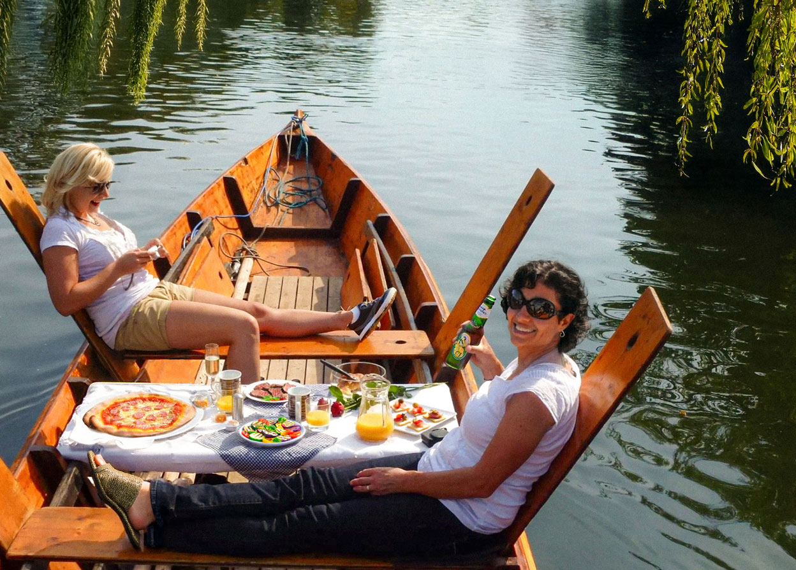

Mikes Stocherkahn
Tübingen vom Neckar aus
erleben!

An Bord mit Mike
Hi, ich bin Mike, Ihr Stocherkahnfahrer in Tübingen.
Mit über 30 Jahren Erfahrung lade ich Sie ein, Tübingen vom Wasser aus zu erleben - persönlich, entspannt und mit Herz.
Ich freue mich auf Sie und Ihre Gruppe!
Unser Angebot
Sammelfahrten
Steigen Sie spontan ein, keine Mindestteilnehmerzahl nötig! Für Einzelpersonen oder kleine Gruppen
- Erwachsene: ab 11€ p.P.
- Jugendliche / Studierende: ab 9€ p.P.
- Kinder bis 12 J.: ab 7€ p.P.
Hölderlinturm
Gruppenfahrten
Exklusiv für Sie und Ihre Gruppe. Ideal für Familien, Schulklassen oder besondere Anlässe. Zeit und Route nach Absprache.
- Bis zu 26 Personen pro Stocherkahn
- Mehrere Kähne gleichzeitig buchbar
- Pauschalpreis ab 90€
Hölderlinturm, Casinospitze oder nach Absprache
Grillfahrten
Genuss und Entspannung auf dem Wasser. Sommer, Wasser, Grillduft - so schmeckt Tübingen!
- Private Fahrt mit Grillen auf dem Neckar
- Wir stellen alles was man braucht - Grillgut, Grill, Besteck und Stimmung
- Pauschalpreis ab 270€ pro Gruppe
Hölderlinturm, Casinospitze oder nach Absprache

Sammelfahrten
Steigen Sie spontan ein, keine Mindestteilnehmerzahl nötig! Für Einzelpersonen oder kleine Gruppen
- Erwachsene: ab 11€ p.P.
- Jugendliche / Studierende: ab 9€ p.P.
- Kinder bis 12 J.: ab 7€ p.P.
Hölderlinturm

Gruppenfahrten
Exklusiv für Sie und Ihre Gruppe. Ideal für Familien, Schulklassen oder besondere Anlässe. Zeit und Route nach Absprache.
- Bis zu 26 Personen pro Stocherkahn
- Mehrere Kähne gleichzeitig buchbar
- Pauschalpreis ab 90€
Hölderlinturm, Casinospitze oder nach Absprache

Grillfahrten
Genuss und Entspannung auf dem Wasser. Sommer, Wasser, Grillduft - so schmeckt Tübingen!
- Private Fahrt mit Grillen auf dem Neckar
- Wir stellen alles was man braucht - Grillgut, Grill, Besteck und Stimmung
- Pauschalpreis ab 270€ pro Gruppe
Hölderlinturm, Casinospitze oder nach Absprache
Stadtführungen
Entdecken Sie Tübingens Altstadt bei einer Stadtführung zu Fuß und
erleben Sie Orte, die vom Wasser aus verborgen bleiben. Schlendern Sie durch historische Gassen, vorbei an
Fachwerkhäusern und bedeutenden Sehenswürdigkeiten, und erfahren Sie spannende Geschichten über die Stadt – eine
ideale Ergänzung zur Stocherkahnfahrt.
Klassische Stadtführung 1,5 Stunden: ab 90€ pro Gruppe
Kürzere Führungen auf Anfrage möglich
Bei Interesse an einer Stadtführung einfach bei der Buchung mit angeben, dann planen wir gerne eine Führung für
Sie ein!
Wo geht's los?
Unsere Stocherkahnfahrten starten an verschiedenen Anlegestellen entlang des Neckars. Sammelfahrten starten immer am Hölderlinturm. Für alle anderen Fahrten kann der Startpunkt individuell vereinbart werden.
Finden Sie hier die passende Anlegestelle:
Hölderlinturm
Casinospitze
Jugendherberge
Weitere Abfahrtsorte möglich, wie zum Beispiel am Hotel Domizil oder am Neckarmüller.
Kontakt
Bei Fragen jeglicher Art oder zur Buchung gerne Anrufen oder hier über das Kontaktformular melden.
Ich freue mich auf Ihre Nachricht und Sie bald auf dem Neckar begrüßen zu dürfen!
0177 415 78 21s24k24@gmail.com
Gut zu wissen
Wie viele Personen passen in einen Stocherkahn?
Wie lange dauert eine Fahrt?
Was passiert wenn es regnet?
Kann ich auf dem Stocherkahn essen und trinken?
Zu welchen Zeiten kann ich fahren?
Wo legt der Stocherkahn an?
Siehe auch: Anlegestellen